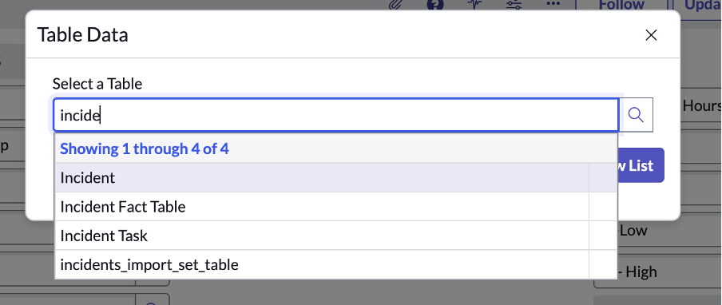
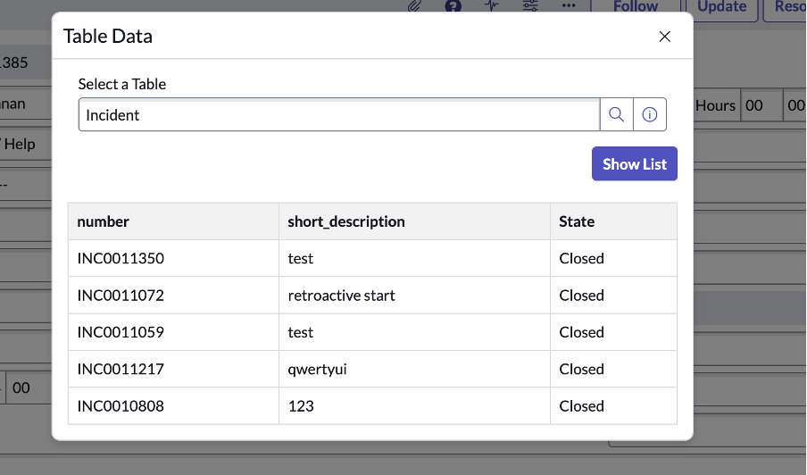
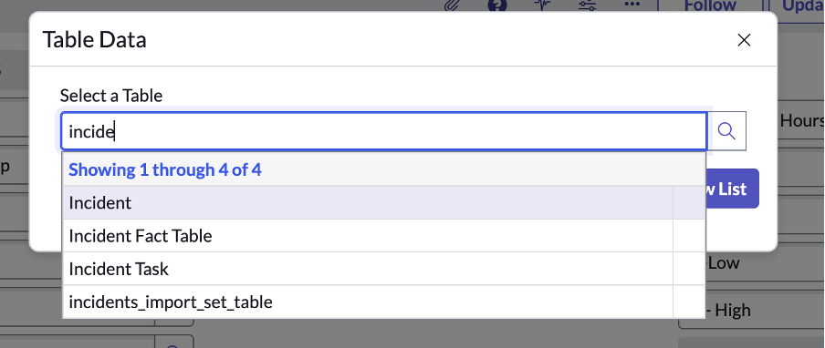
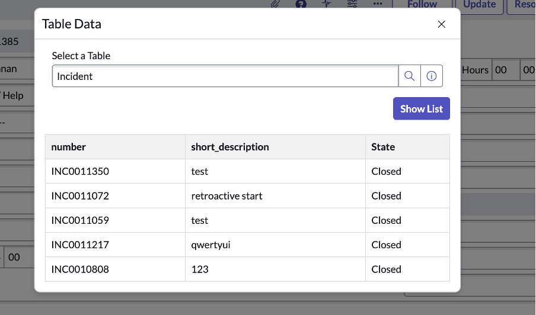

Show Table Data in Modal – Native UI
Author: Yep, again it’s me — Rohan Aditya. Who else? 😆
This guide shows you how to build a UI Action that lets you pick any table and display its data dynamically in a modal using a UI Page, Script Include, and GlideAjax — all inside the native UI, without leaving the current page!
Quick Navigation
Create the UI Action
Navigation: All > System UI > UI Actions > New
- Name: Show table data
- Table: Any table (or Global)
- Action name: show_pop_up
- Onclick: openModal();
Script
function openModal() {
var gm = new GlideModal("list_on_popup_page");
gm.setTitle("Table Data");
gm.render();
}Create the UI Page
Navigation: All > System UI > UI Pages > New
- Name: list_on_popup_page
- Application: Global (or your scoped app)
- Category: General
📄 HTML
<?xml version="1.0" encoding="utf-8" ?>
<j:jelly trim="false" xmlns:j="jelly:core" xmlns:g="glide">
<html>
<head>
<style>
table { border-collapse: collapse; width: 100%; }
th, td { border: 1px solid #ddd; padding: 8px; }
th { background-color: #f2f2f2; }
</style>
</head>
<body>
<p id="err_message" style="display:none; color:red;"></p>
<label>Select a Table</label>
<g:ui_reference name="target_table_pick" table="sys_db_object" />
<button onclick="return onShowList();">Show List</button>
<div id="listContainer" style="margin-top: 20px;"></div>
</body>
</html>
</j:jelly>📄 Client Script
function onShowList() {
clearErr();
var sysId = gel('target_table_pick').value.trim();
if (!sysId) {
$j("#err_message").html("Please select a table.").show();
return false;
}
var ga = new GlideAjax('GetTableRecordsAJAX');
ga.addParam('sysparm_name', 'getRecords');
ga.addParam('sysparm_table_sysid', sysId);
ga.getXMLAnswer(function(response) {
$j('#listContainer').html(response);
});
return false;
}
function clearErr() {
$j("#err_message").hide().html("");
}Create the Script Include
Navigation: All > System Definition > Script Includes > New
- Name: GetTableRecordsAJAX
- Client Callable: True
var GetTableRecordsAJAX = Class.create();
GetTableRecordsAJAX.prototype = Object.extendsObject(AbstractAjaxProcessor, {
getRecords: function() {
var sysId = this.getParameter('sysparm_table_sysid');
var gr = new GlideRecord('sys_db_object');
if (!gr.get(sysId)) {
return "<p>Invalid sys_id.</p>";
}
var tableName = gr.getValue('name');
var grData = new GlideRecord(tableName);
grData.setLimit(5);
grData.query();
var html = "<table><tr>";
if (grData.isValidField('number')) html += "<th>number</th>";
if (grData.isValidField('name')) html += "<th>name</th>";
if (grData.isValidField('short_description')) html += "<th>short_description</th>";
if (grData.isValidField('state')) html += "<th>State</th>";
html += "</tr>";
while (grData.next()) {
html += "<tr>";
if (grData.isValidField('number')) html += "<td>" + grData.getValue('number') + "</td>";
if (grData.isValidField('name')) html += "<td>" + grData.getValue('name') + "</td>";
if (grData.isValidField('short_description')) html += "<td>" + grData.getValue('short_description') + "</td>";
if (grData.isValidField('state')) html += "<td>" + grData.getDisplayValue('state') + "</td>";
html += "</tr>";
}
html += "</table>";
return html;
}
});How It Works
✔️ Click the UI Action → opens a GlideModal with your UI Page.
✔️ Pick any table → Click Show List → Data displays inside the modal dynamically.
✔️ No page reloads. All done using GlideAjax + Jelly + Client Script!
Result
Here’s how the final modal looks when you run it:
 


